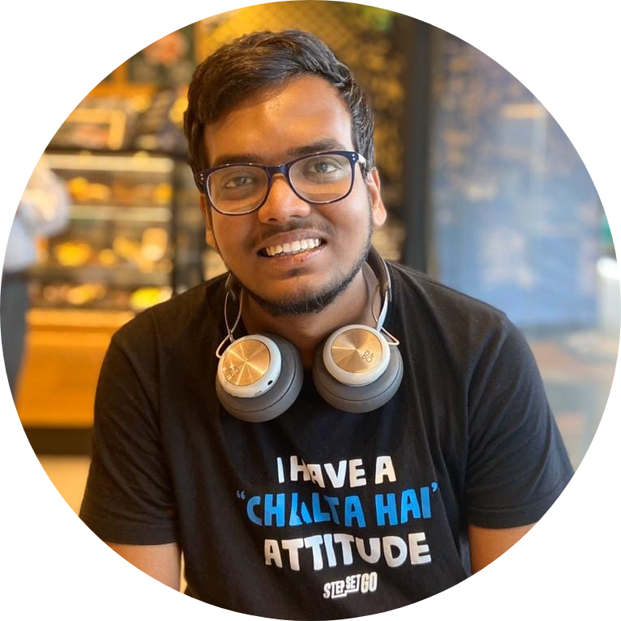

|  |
Aditya Agrawal
MS Student
Computer Science and Engineering
Indian Institute of Technology, Madras
Chennai, India 600036
I am a student pursuing Masters in Computer Science and Engineering at IIT Madras. My research area focuses on Providing solutions
related to the high performance computing domain. I am working under Prof. Venkat Krishna Nandivada. I did my Bachelor's in Computer Science and Engineering
from Kalinga Institute of Industrial Technology, Bhubaneswar where I was ranked third in the class. I have also worked as a Data Scientist and Software Engineer
in HighRadius Technologies, Hyderabad where I was providing solutions on problems related to building predictive models for use cases involving the FinTech
sector.
To know more, click here to visit my LinkedIn Page.
|